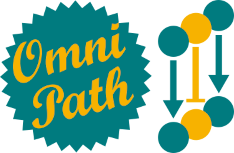

Utility functions to work with OmniPath in R.
OmnipathR is an R package built to provide easy access to the data stored in the OmniPath webservice:
The webservice implements a very simple REST style API. This package make requests by the HTTP protocol to retreive the data. Hence, fast Internet access is required for a proper use of OmnipathR.
The package also provides some utility functions to filter, analyse and visualize the data.
We provide here a brief summary about the data available through OmnipathR. OmnipathR provides access to 5 types of queries:
For a more detailed information, we recommend you to visit the following sites:
https://github.com/saezlab/pypath/blob/master/webservice.rst
https://saezlab.github.io/OmnipathR/articles/OmnipathMainVignette.html
First of all, you need a current version of R (https://r-project.org). OmnipathR is a freely available package deposited on Bioconductor and Github: (https://bioconductor.org/, https://github.com/saezlab/OmnipathR).
You can install it by running the following commands on a R console:
if (!requireNamespace("BiocManager", quietly = TRUE))
install.packages("BiocManager")
## Last release in Bioconductor
BiocManager::install("OmnipathR")
## Development version with the lastest updates
BiocManager::install(version='devel')To get started, we strongly recommend to read our main vignette in order to deal with the different types of queries and handle the data they return:
https://saezlab.github.io/OmnipathR/articles/OmnipathMainVignette.html
You can also check the manual:
https://saezlab.github.io/OmnipathR/reference/index.html
In addition, we provide here some examples for a quick start:
library(OmnipathR)Download human protein-protein interactions from the specified resources:
interactions <-
import_omnipath_interactions(resources=c("SignaLink3","PhosphoSite",
"SIGNOR"))Download human enzyme-PTM relationships from the specified resources:
enzsub <- import_omnipath_enzsub(resources=c("PhosphoSite", "SIGNOR"))Convert both data frames into networks (igraph objects)
ptms_g = ptms_graph(ptms = enzsub)
OPI_g = interaction_graph(interactions = interactions)Print some interactions in a nice format:
print_interactions(head(interactions))
source interaction target n_resources n_references
4 SRC (P12931) ==( + )==> TRPV1 (Q8NER1) 9 6
2 PRKG1 (Q13976) ==( - )==> TRPC6 (Q9Y210) 7 5
1 PRKG1 (Q13976) ==( - )==> TRPC3 (Q13507) 9 2
5 LYN (P07948) ==( + )==> TRPV4 (Q9HBA0) 9 2
6 PTPN1 (P18031) ==( - )==> TRPV6 (Q9H1D0) 3 2
3 PRKACA (P17612) ==( + )==> TRPV1 (Q8NER1) 6 1Find interactions between a specific kinase and a specific substrate:
print_interactions(dplyr::filter(enzsub,enzyme_genesymbol=="MAP2K1",
substrate_genesymbol=="MAPK3"))
enzyme interaction substrate modification n_resources
1 MAP2K1 (Q02750) ====> MAPK3_Y204 (P27361) phosphorylation 8
2 MAP2K1 (Q02750) ====> MAPK3_T202 (P27361) phosphorylation 8
3 MAP2K1 (Q02750) ====> MAPK3_Y210 (P27361) phosphorylation 2
4 MAP2K1 (Q02750) ====> MAPK3_T207 (P27361) phosphorylation 2
Find shortest paths on the directed network between proteins:
print_path_es(shortest_paths(OPI_g,from = "TYRO3",to = "STAT3",
output = 'epath')$epath[[1]],OPI_g)
source interaction target n_resources n_references
1 TYRO3 (Q06418) ==( ? )==> AKT1 (P31749) 2 0
2 AKT1 (P31749) ==( - )==> DAB2IP (Q5VWQ8) 3 1
3 DAB2IP (Q5VWQ8) ==( - )==> STAT3 (P40763) 1 1Find all shortest paths between proteins:
print_path_vs(all_shortest_paths(OPI_g,from = "DYRK2",to = "MAPKAPK2")$res,OPI_g)
Pathway 1: DYRK2 -> TBK1 -> NFKB1 -> MAP3K8 -> MAPK3 -> MAPKAPK2
Pathway 2: DYRK2 -> TBK1 -> AKT3 -> MAP3K8 -> MAPK3 -> MAPKAPK2
Pathway 3: DYRK2 -> TBK1 -> AKT2 -> MAP3K8 -> MAPK3 -> MAPKAPK2
Pathway 4: DYRK2 -> TBK1 -> AKT1 -> MAP3K8 -> MAPK3 -> MAPKAPK2
Pathway 5: DYRK2 -> TBK1 -> AKT3 -> PEA15 -> MAPK3 -> MAPKAPK2
Pathway 6: DYRK2 -> TBK1 -> AKT2 -> PEA15 -> MAPK3 -> MAPKAPK2
.....Feedbacks and bugreports are always very welcomed!
Please use the Github issue page to report bugs or for questions:
https://github.com/saezlab/OmnipathR/issues
Many thanks for using OmnipathR!